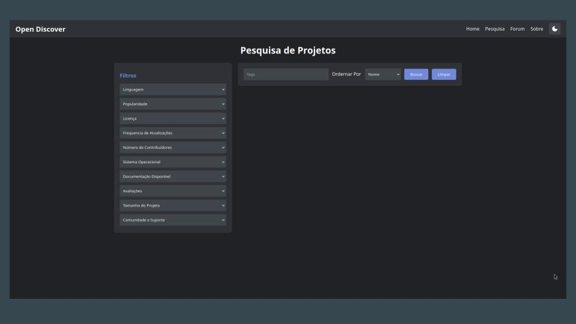
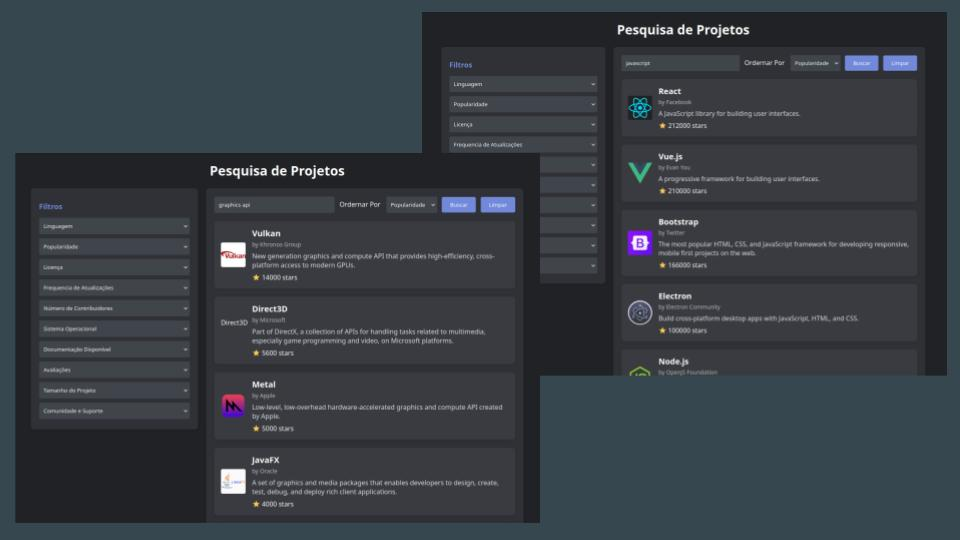
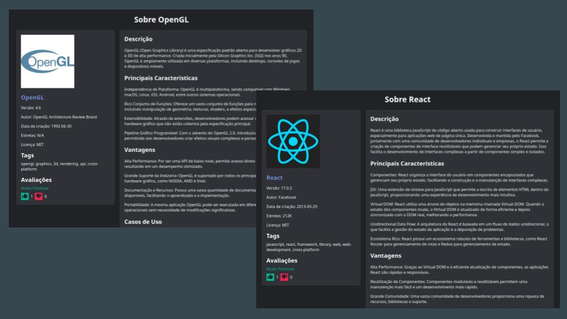
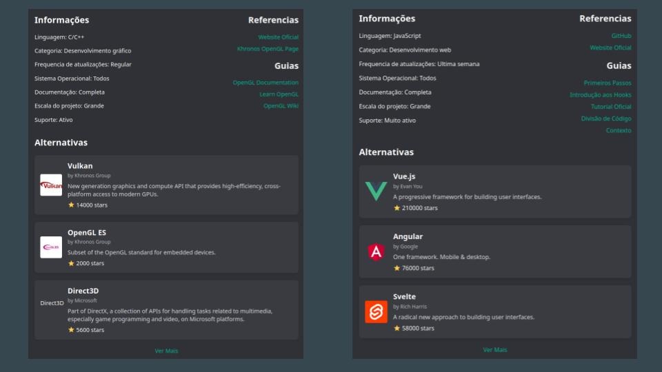
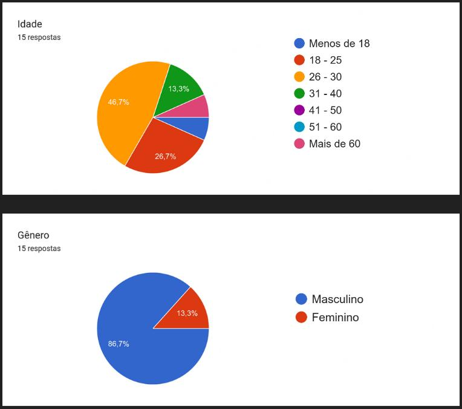
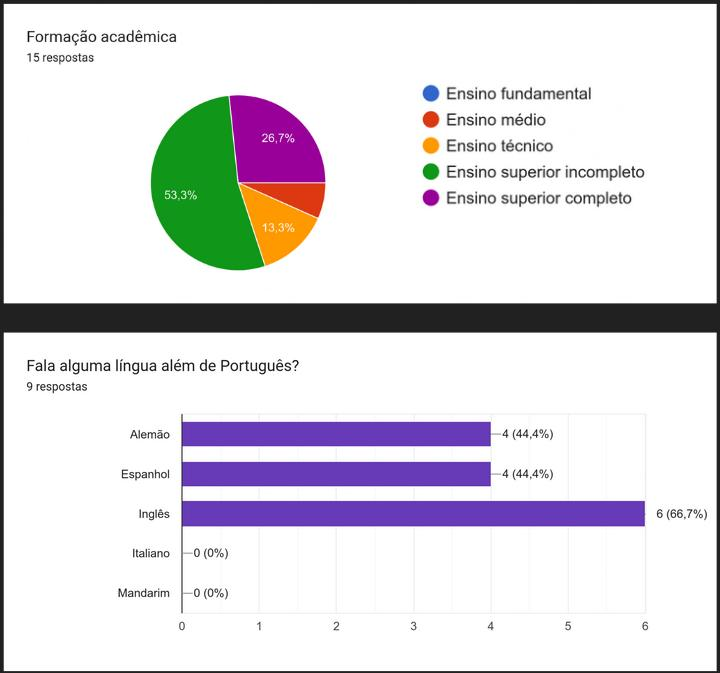
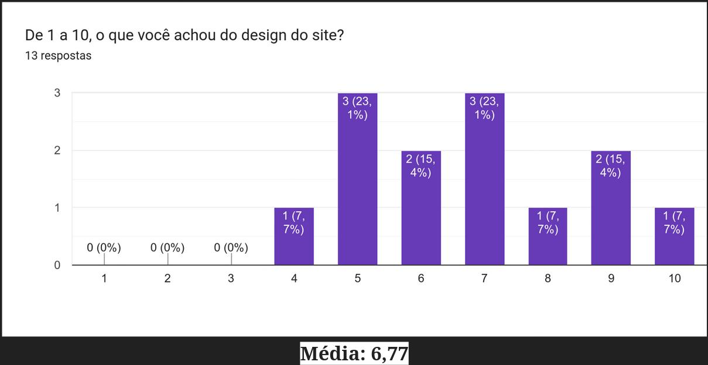
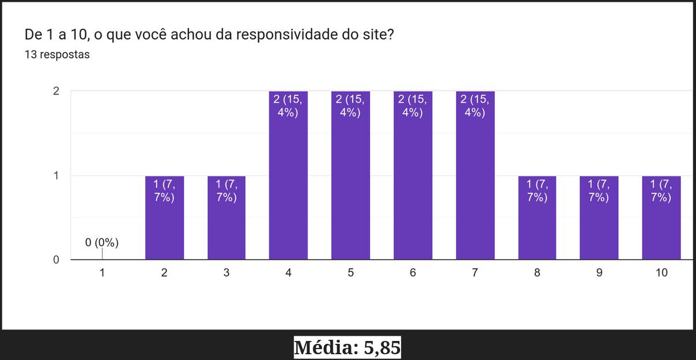
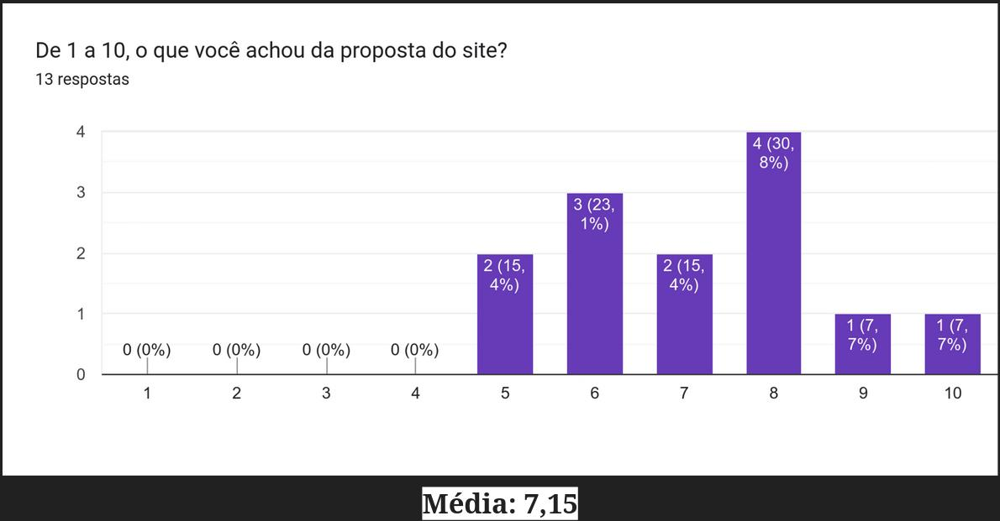
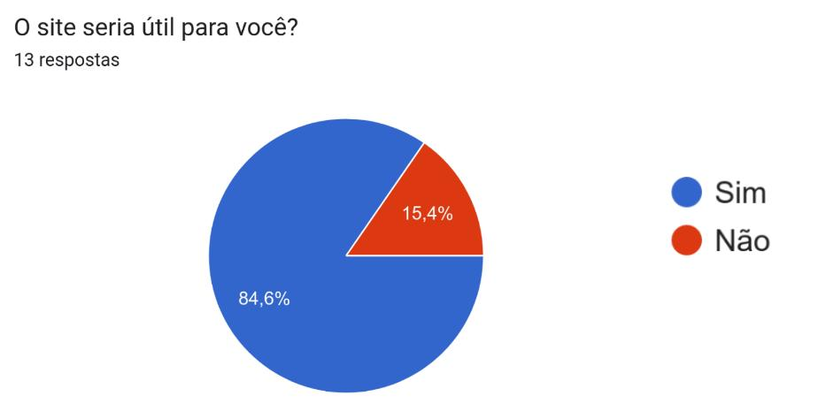

A Nossa Solução
Para a nossa solução, o time optou pela criação de uma plataforma de busca de software open source chamada Open Discover. Esta plataforma tem como objetivo principal facilitar o processo de descoberta de softwares e bibliotecas open source para desenvolvedores, especialmente amadores. O funcionamento se baseia em uma ferramenta de busca diferenciada que fornece informações detalhadas sobre popularidade, facilidade de implementação, instruções de instalação, alternativas e um espaço para discussão entre usuários sobre softwares específicos.




Validação da Solução
Os dados indicam que o Open Discover tem uma proposta sólida e é considerado útil pela maioria dos seus usuários. No entanto, há espaço para melhorias, especialmente na responsividade do site e alguns aspectos do design. Focar nesses pontos pode aumentar ainda mais a satisfação dos usuários e o sucesso da plataforma.





